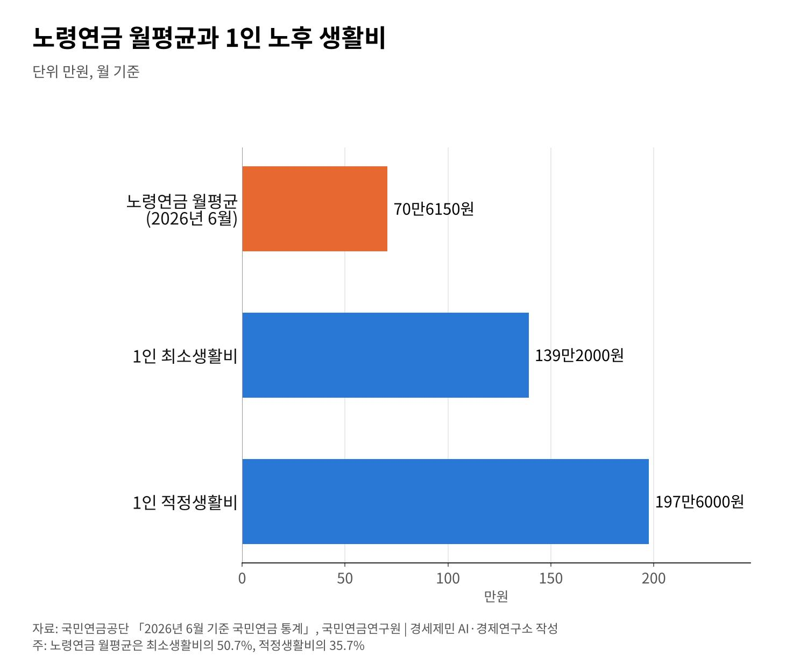

[한국경제 불편한 진실④] 국민연금 소득대체율 43%, 평균 노령연금은 70만6150원
43%는 40년 가입 기준, 노령연금 평균은 1인 최소생활비의 50.7%
퇴직연금 501조4000억원, 넷 가운데 셋은 원리금보장형에 머물러
기금 소진 2069년으로 늦춰진 전망, 자동조정장치는 구조개혁 과제로
AI경세제민=김갑봉 기자 | 국민연금 소득대체율은 올해부터 43%다. 2025년 3월 국회를 넘은 개정 국민연금법에 따른 값이다. 법을 고치지 않았다면 41%로 내려갈 예정이었다.
43%는 40년을 빠짐없이 가입한 사람의 기준값이다. 실제 노령연금 월평균은 70만6150원이다(2026년 6월). 1인 노후 최소생활비 139만2000원의 50.7%다.
연금이 노후를 얼마나 받쳐 주는지 숫자로 짚는다. 국민연금공단 공표통계와 국회예산정책처 전망, 퇴직연금 통계를 차례로 본다.
보험료율 13%, 소득대체율 43%의 기준
국회 본회의는 2025년 3월 20일 국민연금법 개정안을 통과시켰다. 1988년 제도 도입 뒤 세 번째 개혁이다. 2007년 개혁 뒤 18년 만이다.
보험료율은 9%에서 13%로 오른다. 2026년 1월부터 해마다 0.5%포인트씩 올려 2033년 13%에 닿는다. 올해 보험료율은 9.5%다.
소득대체율은 41.5%에서 43%로 바뀌어 2026년부터 고정된다. 40년 가입을 전제로 한 값이다. 이미 연금을 받는 수급자의 연금액은 그대로다.
가입기간이 40년보다 짧으면 실제 대체율도 그만큼 낮아진다. 실직이나 휴직으로 가입 공백이 길수록 43%와 실제 수령액의 거리는 벌어진다.
노령연금 평균 70만6150원, 최소생활비의 절반
국민연금공단 공표통계로 노령연금 월평균은 70만6150원이다(2026년 6월, 특례·분할연금 제외). 노령연금 평균은 올해 1월 처음 70만원을 넘었다.
국민연금연구원 조사로 1인 기준 노후 최소생활비는 월 139만2000원이다. 적정생활비는 197만6000원이다. 평균 노령연금은 최소생활비의 50.7%, 적정생활비의 35.7%다.
부부 기준으로는 최소 216만6000원, 적정 298만1000원이 든다. 가입기간 20년 이상 수급자의 월평균은 117만3493원이다. 오래 가입할수록 연금액이 커진다.

퇴직연금 501조4000억원, 넷 가운데 셋은 원리금보장형
고용노동부와 금융감독원의 2025년 퇴직연금 투자백서로 적립금은 501조4000억원이다(2025년 말). 1년 새 약 70조원 늘었다.
적립금의 75.4%인 378조1000억원이 원리금보장형 상품에 있다. 실적배당형은 24.6%인 123조3000억원이다. 돈의 넷 가운데 셋이 원금을 지키는 쪽에 머문다.
가입률은 아직 절반을 조금 넘는다. 국가데이터처 퇴직연금통계로 2024년 가입률은 53.3%다. 가입 대상 근로자 1308만6000명 가운데 697만2000명이 가입했다.
사업장 도입률은 26.5%다. 퇴직연금이 국민연금의 빈 곳을 메우려면 가입 범위와 운용 방식을 함께 살펴야 한다.
가입자 2156만명, 기초연금 34만9700원
국민연금 총가입자는 2156만6567명이다(2026년 6월 30일). 전체 수급자는 799만8890명이다. 그 가운데 노령연금 수급자는 663만8604명이다.
2026년 기초연금 기준연금액은 월 34만9700원이다. 2025년 34만2510원에서 2.1% 올랐다. 선정기준액은 단독가구 247만원, 부부가구 395만2000원이다.
국가데이터처 통계로 66세 이상 상대빈곤율은 37.7%다(2024년 소득 기준). 전년 39.8%에서 2.1%포인트 내렸다. 노인 열 명 가운데 네 명 가까이가 중위소득 절반에 못 미친다.
기금 소진 2069년 전망과 남은 과제
국회예산정책처는 2025년 6월 개혁 효과를 분석했다. 기금 적자 전환은 2041년에서 2048년으로 늦춰진다. 소진은 2057년에서 2065년으로 늦춰지고 미적립부채는 669조원 줄어든다.
2026년 6월 수정전망은 2025년 기금 수익률 18.8%를 반영했다. 적자 전환은 2050년, 소진은 2069년으로 더 늦춰졌다. 국민연금공단 공표통계로 기금은 1865조5756억원이다(2026년 6월, 잠정).
자동조정장치는 개정법에 담기지 않았다. 기대수명과 가입자 수 변화에 맞춰 급여를 조정하는 장치다. 이 과제는 국회 연금개혁특위의 구조개혁 논의로 넘어갔다.
호주는 의무 적립 퇴직연금인 슈퍼애뉴에이션을 운영한다. 호주건전성감독청(APRA) 집계로 전체 적립금은 4조7672억 호주달러다(2026년 6월 30일). APRA 규제기금만 3조4000억 호주달러다.
소득대체율 43%는 법이 정한 기준이고, 실제 연금액은 가입기간이 정한다. 평균 노령연금은 1인 최소생활비의 절반 수준이고, 퇴직연금은 대부분 원리금보장형에 있다.
남은 과제는 구조개혁이다. 자동조정장치, 퇴직연금과의 연계, 기초연금 역할 조정이 특위 논의를 기다린다. 가입기간을 늘리는 일이 실제 연금액을 키우는 첫 단추다.
참고문헌
기관 자료
- 국민연금공단, 「2026년 6월 기준 국민연금 통계」, 2026년 9월 30일. https://nps.or.kr/pnsinfo/databbs/getOHAF0269M1Detail.do?hmpgBbsCd=BS20240125&menuId=MN24000999&pstId=ZZ202600000000001080
- 보건복지부, 「보험료율 13%, 소득대체율 43% 등 담은 연금개혁법안 국회 본회의 통과」, 2025년 3월. https://www.mohw.go.kr/board.es?mid=a10503010100&bid=0027&act=view&list_no=1485039
- 고용노동부·금융감독원, 「2025년 우리나라 퇴직연금 투자 백서」(KDI 경제정보센터 전재), 2026년 5월 20일. https://eiec.kdi.re.kr/policy/materialView.do?num=281323
- 국가데이터처, 「2024년 퇴직연금통계 결과」(KDI 경제정보센터 전재), 2025년 12월 15일. https://eiec.kdi.re.kr/policy/materialView.do?num=274741
- 국회예산정책처, 「2025년 국민연금법 개정의 재정 및 정책효과 분석」 발간, 2025년 6월 9일. https://www.nabo.go.kr/ko/notice/releasesView.do?idx=8755
- 보건복지부, 「2026년 노인 단독가구, 소득인정액 월 247만 원 이하면 기초연금 받는다」, 2026년 1월. https://www.mohw.go.kr/board.es?mid=a10503010100&bid=0027&act=view&list_no=1488478
- 호주건전성감독청(APRA), 「APRA releases superannuation statistics for June 2026」, 2026년 8월 31일. https://www.apra.gov.au/node/63192
언론 보도
- "'더 내고 더 받는' 국민연금 개정안 국회 통과…18년 만에 연금개혁", 뉴시스, 2025년 3월 20일. https://www.newsis.com/view/NISX20250320_0003106817
- "국민연금 월 200만원 받는 노인 11만명 돌파…평균 수급액은 70만원", 쿠키뉴스, 2026년 5월 3일. https://www.kukinews.com/article/view/kuk202605030016
- "국민연금 받는 어르신 744만 명…60세 미만 20만 명 아래로", 이투데이 브라보마이라이프, 2026년 6월 4일. https://bravo.etoday.co.kr/view/atc_view/19386
- "50대 '노후는 68.5세부터…부부 적정 생활비 298만원'", 이데일리, 2025년 12월 31일. https://v.daum.net/v/20251231184005274
- "국내 퇴직연금 적립 500조원 돌파…수익률 6.5% '역대 최대치'", 뉴시스, 2026년 5월 20일. https://www.newsis.com/view/NISX20260520_0003637115
- "코스피 불장에 수익률 대박난 국민연금…기금 고갈 4년 미뤘다", 아시아경제, 2026년 6월 20일. https://view.asiae.co.kr/article/2026061909133399557
- "국민연금, 주식으로 245조 '잭팟'…기금 소진 2069년으로 연장", 헤럴드경제, 2026년 6월 18일. https://www.heraldk.com/article/2026061816142077362
- "근로자 10명 중 1명은 '빈곤층'…작년 비중 사상 첫 반등", 헤럴드경제, 2025년 12월 4일. https://www.heraldk.com/article/2025120400183451170
- "고령자 비중 21.6%...부 늘었지만 삶 만족·사회적 관계 퇴보", YTN, 2026년 10월 2일. https://www.ytn.co.kr/_ln/0102_202610020439319593
- "'노후 안정 지원' 기초연금, 2030년 30조원 넘는다", 파이낸셜뉴스, 2026년 9월 6일. https://www.fnnews.com/news/202609060947144573
[사진 출처]
- [사진1] 미 육군 제4보병사단 1여단 Jonathan Sauls 중위, 「U S Soldiers Serve Korean Seniors at Pocheon Community Event (9243239).jpg」, 2025년 8월 7일, 위키미디어 공용, 퍼블릭 도메인(미국 연방정부 저작물). https://commons.wikimedia.org/wiki/File:U_S_Soldiers_Serve_Korean_Seniors_at_Pocheon_Community_Event_(9243239).jpg
- [도표1] 경세제민 AI·경제연구소 작성. 자료 국민연금공단 공표통계, 국민연금연구원
※ 이 기사는 AI 프로그램 클로드를 활용해 작성했습니다.
관련기사
- [한국경제 불편한 진실②] 인구 줄어도 집값은 오른다, 도쿄와 서울이 보여 준 것
- [한국경제 불편한 진실③] 공무원연금 수급자 69만명, 적자는 일반회계가 메운다
- [한국경제 불편한 진실⑤] 자영업자 빚 1095조원, 혼자 일하는 사장이 늘었다
- [한국경제 불편한 진실⑥] K방산 4사 영업이익 4조6324억원, 이익은 공급망 아래로 내려가나
저작권자 © AI경세제민 무단전재 및 재배포, AI학습 및 활용 금지